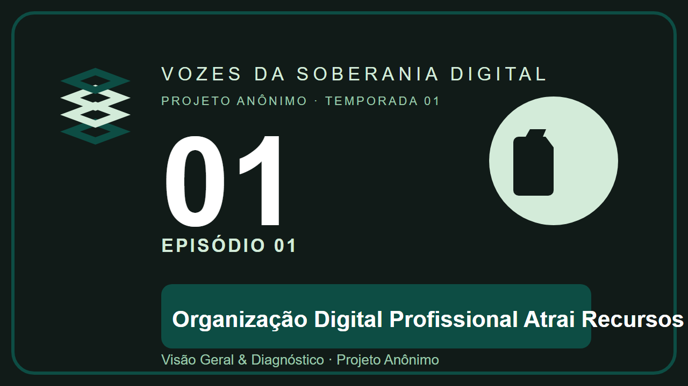
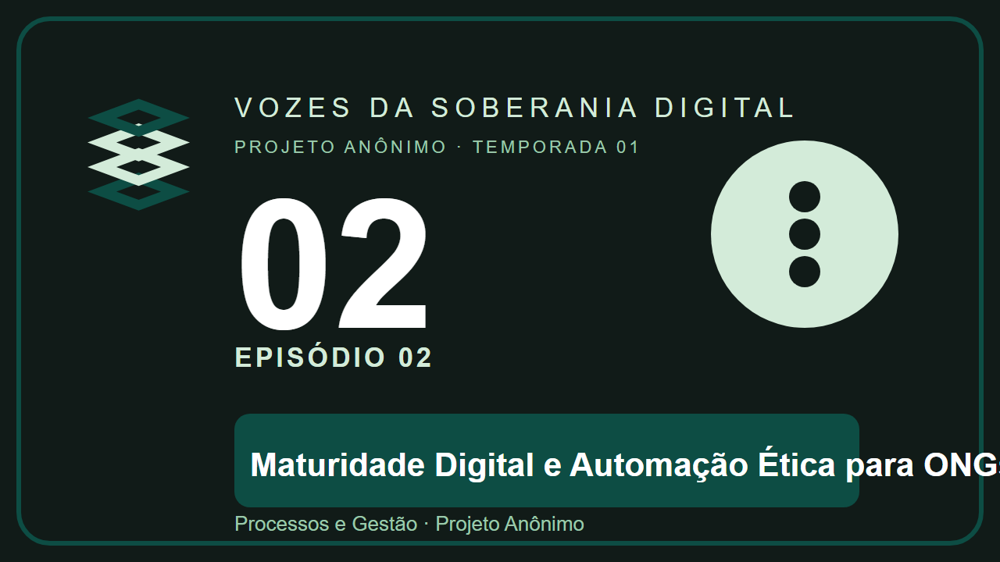
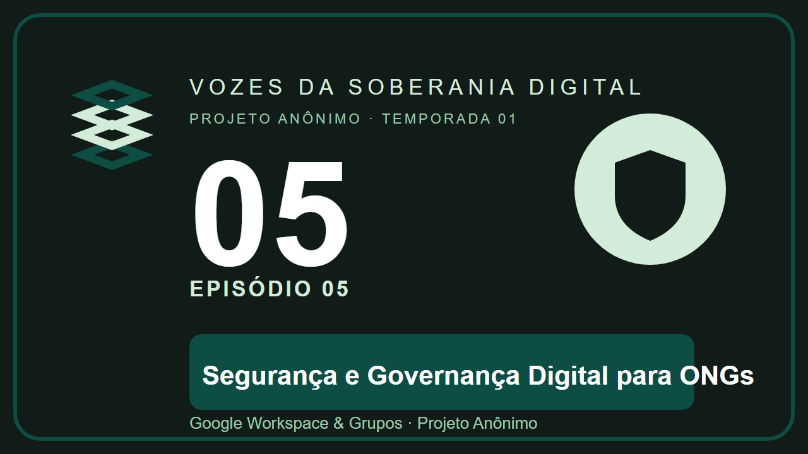
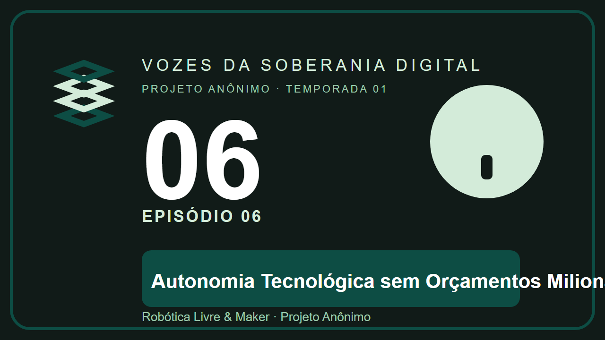

Ep. 01Organização Digital Profissional Atrai Recursos
Visão Geral & Diagnóstico
Ouvir Ep. 01 no YouTube Fazer DiagnósticoSabemos que a rotina de quem lidera projetos sociais, escolas comunitárias e coletivos não para. Em conversas diretas de 19 a 33 minutos, nossos episódios dissecam os desafios reais da ponta — da segurança contra vazamentos de dados à captação de recursos sem estresse.
Sete conversas diretas para organizar a casa digital, proteger dados e destravar recursos.

Ep. 01Visão Geral & Diagnóstico
Ouvir Ep. 01 no YouTube Fazer Diagnóstico
Ep. 02Processos e Gestão
Ouvir Ep. 02 no YouTube Ler sobre maturidade digitalInteligência Artificial & LGPD
Ouvir Ep. 03 no YouTube Ler sobre IA responsávelCaptação & MROSC
Ouvir Ep. 04 no YouTube Ler sobre editais
Ep. 05Google Workspace & Grupos
Ouvir Ep. 05 no YouTube Ler sobre governança
Ep. 06Robótica Livre & Maker
Ouvir Ep. 06 no YouTube Ler sobre robótica livre Ep. 07
Ep. 07
Soberania, CRM & Backup
Ouvir Ep. 07 no YouTube Explorar a Biblioteca VivaNenhum podcast substitui olhar para dentro da sua própria casa. Responda nosso questionário orientativo e receba um mapa de prioridades para os próximos 30 dias.